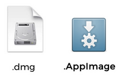

給 macOS 使用者轉換到 AppImage
本頁將 AppImage 的術語與 macOS 的對應概念做比較，可協助從 macOS 轉到 Linux 的使用者快速理解 AppImage 概念。
AppImage 概念 |
大致的 macOS 對應物 |
|---|---|
|
位於 |
|
|
|
|
|
|
AppDir 內的 |
|
沒有直接對應物，但可使用 ELF 區段 |
|
可選的 |
Launch Services 用於在系統中註冊應用程式（例如 MIME 類型、圖示等） |
沒有直接對應物，但 AppImageHub 是可用 AppImage 的中央目錄 |
Mac App Store |
ELF 區段中的可選簽章 |
|
尚無直接對應物，但在建置流程中可使用 linuxdeployqt`_（適用於 Qt、C++、C）或在 Electron 應用程式中使用 `electron-builder |
Xcode IDE 在您點擊「compile」時會產生 |
|
|